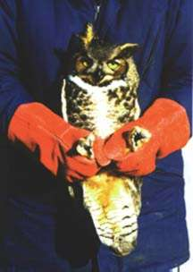

-
How To Rescue A Raptor
by Jan Rethorst
In the northeastern U.S., the influx of birds to rehab centers fluctuates with the seasons. Fall and winter bring in illegally shot birds and those starving from the hardships of winter. Spring and summer have proven to be the time in which we get most of our patients, young and old. There are always orphaned owlets and eyas hawks that have fallen or been blown out of their nests. Meanwhile, parent birds are out there desperately and, sometimes, too daringly hunting for enough food to feed all the hungry mouths of their brood. Whether they don't take the time to look before they cross or they have found a nice morsel of road kill, their timing is sometimes off and, unfortunately, many of them are hit by vehicles. If the parents are successful in raising those bright new wonderful babies, then they find they have produced ignorant klutzy fledglings who don't know about cars and don't have the strength or skill to avoid them (and, for some, not even trees or other stationary obstacles in their flight path). Pesticides are more prevalent and the list of hazards continues. Fortunately for the birds, there are concerned individuals (like many of you reading this) who have and/or will take time out of their busy schedules to help a bird in distress.
Now, not all of us are as spontaneous as the man who bare-handedly rescued the drowning grescued the drowning gunshot eagle from the river near our center. This is probably a good thing as a raptor can inflict pain upon any flesh you make available to it if the bird is not handled carefully. With that in mind, we would like to offer some suggestions as to how to retrieve, temporarily care for, and transport an injured bird of prey.
Sometimes, just knowing if a bird needs help is hard to assess. It is not uncommon for baby birds of all types to fall from their nests. In fact, their parents are very likely to continue caring for them on the ground. Eventually, the babies might find a bush, or a pine tree with low growing branches, or a fallen tree on which they can find their way back off the ground and continue calling, alerting their parents to their location. However, the ground can be dangerous for a defenseless baby if there are cats, dogs, or other predators around to find it. If you discover a young bird in this situation and it seems uninjured, place it back as close to its nest as possible, or on a branch. If the bird is unable to perch yet, place it in a container (small box or strawberry carton) attached to the tree. Kestrels and some of the owls are cavity nesters and it may be hard to find their nest or the adult birds. Keep an eye on the youngster from your house or a hidden location and see if its cries bring the parents. If you are unable to locate the nest area or see no signs of activity from the parents, it's time to get it to a rehabber. Keep in mind, though, that no matter how healthy we can keep it even with surrogate parents, rehabbers cannot do what parents in the wild can do when it's time for the young to fledge and begin finding food.
If you find an injured bird, remember that a stunned bird may look unable to move or get away, but, while you take the time to dig through your garage for the right materials to rescue it, the bird, meanwhile, can come to and, unable to fly, will run into the woods and deep cover. If there is anyone else around, have one person stay with the bird to see that it doesn't go anywhere or, if it does, to follow it and keep track of its location. If you are away from home and alone, use your jacket to catch it and worry about the box, etc. later. Many times, we get calls from people asking us to come and rescue a bird, but, by the time we drive to the site, the bird has disappeared.
Now, what was it you were digging through your garage for a paragraph ago? Right, raptor rescue items, which should include, an empty cardboard box (with an old towel, if you have one, for the bird to stand or lay, belly down on); a heavy pair of gloves, such as welding gloves, garden gloves, or some type of thick leather gloves; and a second towel, jacket or blanket. With the towel, jacket or blanket, you can stand out of the bird's reach and toss the cover over its head. This will do two things. First, it will take away the bird's vision so that it should calm down and, if nothing else, prevent it from seeing your approach. Secondly, it gives the bird something to grab onto besides you. Now you can retrieve the bird, wearing the gloves, by coming from behind, grabbing the body with the wings pinned to the sides, and placing it right into a box. Once the bird is in the cardboard box, remove the covering from its head and close it securely. If the bird is not in your backyard and you have nothing to put it in, there are a couple of options. If the tossed towel or jacket is doing its job, the bird will keep its legs still. You can then slide your hands down toward the bird's legs and hold onto them, using your forearms to pin the wings against the bird's body.
Holding a Great Horned Owl in front of body  In this way, you will take away its ability to foot you which is how it would have inflicted its worst damage. Most raptors don't bite and even those that do shouldn't if their head is covered. Regardless, worry about their feet before you worry about their beak. Once you have the bird secured this way, you can hike out of the woods with it. You can even transfer a raptor to one hand and, holding both legs, sort of cradle it with its head leaning on your upper arm, its backside down, and its wings pinned between your arm and body.
Holding a Great Horned Owl in crook of arm If you are driving, you can wrap the injured bird in the towel or jacket that you tossed over it, but it is best to contain the bird somehow as you don't want to have your own accident should it get loose and start touring your car. Do not put the bird in your trunk. Before leaving the site where you found the bird, do one more thing. Make a mental note of the surroundings, such as how near you are to a road. If you know the area and its usage, you may know if it is hunted heavily or if pesticides were applied recently. If the bird is in your yard, do you have a plate glass window it might have flown into? Report anything that might help a rehabber make his or her diagnosis.
Putting an Eagle in a cardboard box The next step is to care for it until you get it to a rehabber. I should explain why I suggest you put the bird in a cardboard box rather than in your cockatoo's cage. The bird you rescue will be a wild animal. It doesn't want to see you and it doesn't want to watch your cat, dog, or children walk by. This adds more stress to an already dangerously stressful situation. Wild birds also want to get away and will cling to the cage sides to find an escape route. By doing so, they can damage their feathers and some have even broken toes and cut up their feet on such cages. A cardboard box provides darkness which should keep them calm; but, even if they do become disturbed and move around, they have nothing to cling to or catch themselves on. I also mentioned that the box should be empty, except for a towel. There should be no food or water placed in the box. A starving bird has only a small amount of energy left and will use this up more quickly if its digestive system is trying to break down solid food. Instead, rehabbers must rehydrate patients and will use a fluid energy solution, as used for humans in hospitals, to bring the bird up to the condition where it can handle solid food. Water also presents a danger if the bird is disoriented or has an injury to an extremity where it might fall and not be able to get up or right itself. A pan of water, then, becomes a drowning hazard.
Once the bird is safe in its box, make sure that it stays warm in the winter and cool in the summer. A bird in shock cannot regulate its own body temperature and will freeze or overheat, depending on the weather. Don't leave it in your garage in the winter or in your car in the summer. Also, put the boxed bird in a room where it can remain calm, not where you or your family are looking in on it every 10 minutes or your dog is wagging its tail against the box. Contact a rehabber in your area by visiting our Help Injured Wildlife page.
You can also check with your local veterinarians or animal shelters to see if they know who the closest licensed rehabilitator is, but do not assume that a veterinarian is experienced in wildlife husbandry or even wildlife medicine. Some veterinarians and animal shelters are licensed to handle wildlife, but not all. You want to ensure they get to a rehabber whose profession is to know how to treat and care for wildlife with the help of their veterinarian. You can also try calling your state at the capitol and obtain the number for the agency responsible for licensing rehabilitators. There are rehabilitators throughout the United States and the world. If you will be transporting the animal to the rehabber, make sure the box is closed so that the bird cannot get out, yet air can get in. At times, we've met people in the driveway of the center with a bird loose in their car because it was out cold when they put it in a box without a cover, but got its wits about it on the way in for treatment. Birds should not be placed in the trunk, nor in the back of a pickup, even a covered one, because of carbon monoxide poisoning.
If you have any trouble with any of the above steps, just give your local rehabber a call. If you don't feel comfortable picking up a bird of prey, you might be able to turn a box over on it to prevent it from running away while someone comes to retrieve it. If you're still not sure if there's anything wrong, call and someone will try and help make that decision. Usually, if there is a question, it's better to retrieve the bird, bring it in for an exam, and, if nothing is wrong, it can be returned to the same spot that day, or the next after it has a free meal. The bird might let you know its condition, when you approach it. Don't be surprised if it flies off from the spot it had simply been sunning itself in. In fact, we couldn't ask for anything better.
-
A Cinderella Story
by Bill Streeter
Last summer we received a female eastern goshawk for rehabilitation. It was the first goshawk to come to our center in over ten years. Goshawks are stunningly beautiful large woodland hawks that are rare. The largest of our three accipiters (about the size of a red-tail), the adult has a sleek back with grey wings and tail, light grayish breast, brilliant white undertail coverts, a black capped head with a white eye stripe over a blood red eye. Their preferred food in our area is ruffed grouse, and anyone walking in the woods who has ever flushed a grouse may be able to appreciate the explosive quickness and speed it would take for a predatory bird to catch one in flight. Goshawks do it regularly with their incredibly powerful acceleration, lightening speed, and amazing reflexes all while dodging tree trunks and branches.
Their numbers are very low, in part because of their specific habitat requirements and intolerance of human disturbance. They need large expanses of isolated forest near a water source without human activity nearby. They are normally hard to find because their behavior is very secretive. A goshawk will fly away long before you get close enough to see it, except during nesting season from March through June. Then if you enter their territory, they will find you. Goshawks will defend their nests vigorously. If you approach a nest tree within a couple of hundred yards, one or both parent birds will generally fly overhead screaming loudly "kak-kak-kak-kak." If you get close to or climb the tree, they may whack you on the head and face with their formidable talons during a flyby. They won't be too happy with your dog either, and will attack it without mercy. If you are passionate about raptors, it is easy to appreciate the magnificence of a goshawk.
This particular hawk came in with her legs extended and talons clenched in a ball. Whenever hawks come in with both of their legs or feet compromised it implies one of two things: poison or trauma. Certain types of poison result in limited paralysis of the legs. Generally the bird has some movement, but always wants to keep its legs extended with its toes clenched tightly. Often this is in combination with other symptoms such as salivation and uneven pupils or pupil fluttering. Poisoned birds are treated by a combination of techniques including flushing out their system with oral boluses of lactated ringers or other isotonic solutions, the use of various poison absorptive agents, and injections of atropine sulfate if organo-phosphate poisoning is suspected.
If a bird has no leg movement at all, x-rays may reveal a fracture in the pelvis or spine. Spinal cord injuries are often not detectable in an x-ray, however, and prognosis for recovery is always very poor if the spinal column is injured. A fracture in any of the leg bones rarely results in complete immobility of the leg. Leg fractures are usually easily felt and are obvious on an x-ray. Tendon damage is always a consideration with fractures as well.
This particular goshawk could actually move both legs in a normal manner. It just couldn't open up its feet to walk. X-rays showed no fractures, and although we treated for poison, we suspected spinal trauma. In our experience, when birds cannot stand, they generally do not live more than a week or two, often because their excretory functions are severely compromised.